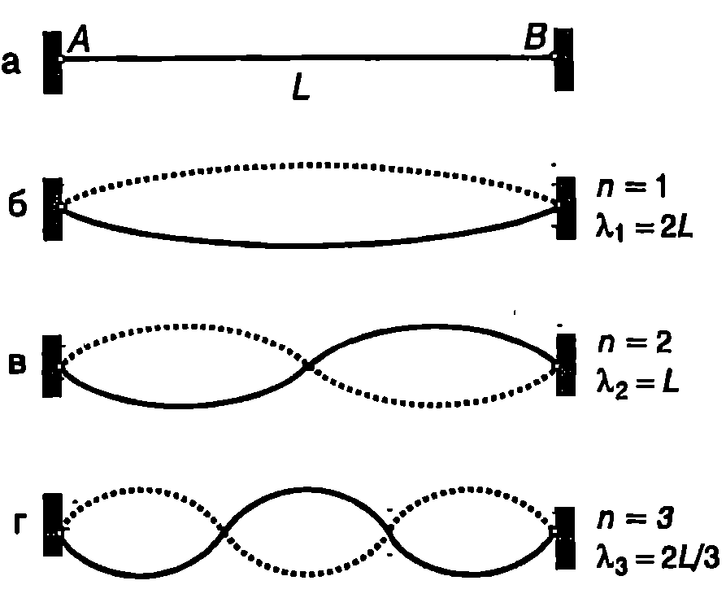
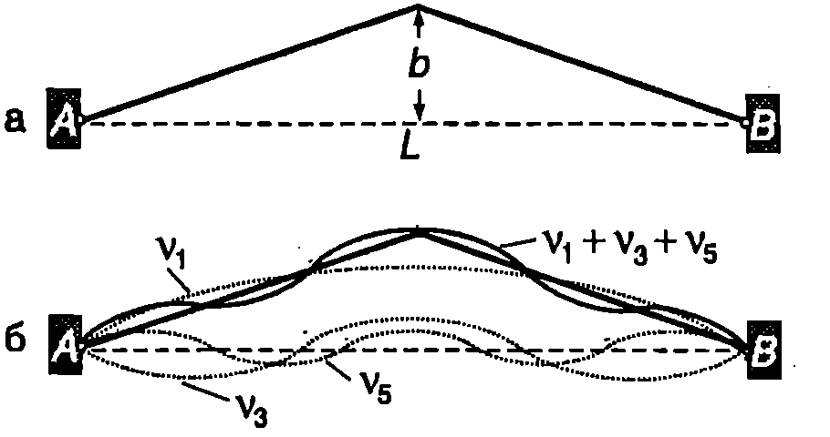
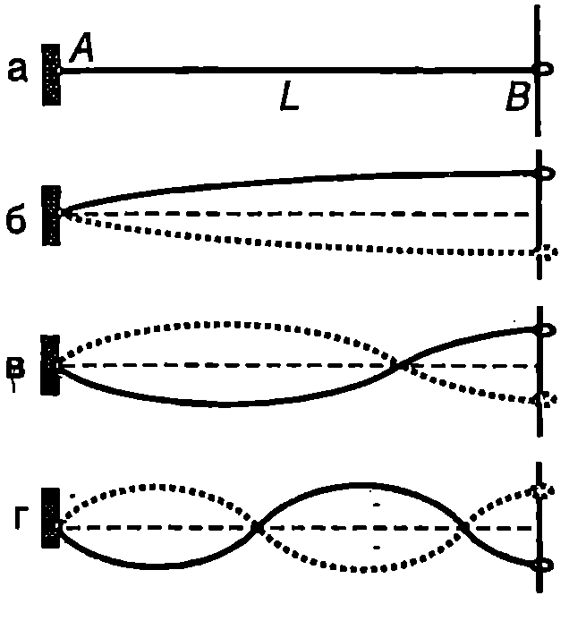

Характеристики на стоящите вълни
Дотук разглеждахме разпространението на вълни в неограничена среда. Ако средата е ограничена, на границите се наблюдават явленията отражение и пречупване на вълни. На тези явления ще се спрем по-подробно при изучаването на светлинните вълни. Тук ще разглеждаме само случая, когато вълната пада перпендикулярно и изцяло се отразява от границата, след което се разпространява в противоположната посока. Нека плоска хармонична вълна
която се разпространява по посока на оста , се отразява от границата и след отражението се разпространява в противоположната посока (по оста ). Отразената вълна има същата амплитуда , и кръгова честота и се изразява с уравнението
В общия случай началната фаза на отразената вълна е различна от началната фаза на падащата вълна.
За механичните вълни, както при трептенията (вж.~\ref{sec:72}), е в сила принципът на суперпозицията. Когато в една област се разпространяват едновременно две или повече вълни, всяка частица от средата извършва независими едно от друго отклонения от равновесното си положение, които съответстват на дадените вълни. Резултантното отклонение на частицата е векторна сума от тези отклонения. Ще отбележим, че принципът на суперпозицията се нарушава, когато едновременно се разпространяват вълни с голям интензитет, при което деформациите на средата престават да бъдат линейни, т.е резултантната деформация не е сума от деформациите, предизвикани от отделните вълни.
Следователно при суперпозицията на падащата и отразената вълна общото отклонение на частиците от равновесното им положение се описва с функцията
където сме заместили и от уравнения \eqref{eq:77.1} и \eqref{eq:77.2} и сме използвали тригонометричната формула за сума на два синуса (вж. част 1, (А.44) на стр.234).
Вълните, които се описват с уравнение \eqref{eq:77.3}, се наричат стоящи вълни. Функцията
определя формата на стоящата вълна. Нейният модул
е равен на амплитудата, с която трептят различните точки от средата. На Фиг. \ref{fig:77.1} е показана стояща вълна в три различни момента от времето. Моментът е избран така, че Тогава отклонението за всички частици е , т.е в този момент всички частици едновременно преминават през равновесното си положение. В момента , където е периодът на трептене, В този момент всички частици едновременно са достигнали максималното си отклонение от равновесното положение, което е равно на . В момента , когато

`Фиг. 77.1`
отклонението отново е максимално, но е в противоположната посока, т.е. . Съгласно с уравнение \eqref{eq:77.5} амплитудата на трептене на частиците зависи от тяхната координата . Точките, за които трептят с максимална амплитуда, равна на . Точките, в които амплитудата на трептене е максимална, се наричат върхове на стоящата вълна. Точките, за които се наричат възли на стоящата вълна. Частиците, намиращи се във възлите, през цялото време остават неподвижни. Разстоянието между два съседни възела (или върха) на стоящата вълна е равно на половин дължина на вълната (). Положението на върховете и на възлите не се изменя с течение на времето, поради което вълната се нарича стояща. Всички частици, разположени между два съседни възела, трептят с еднаква фаза. Частиците, разположени от двете страни на даден възел, трептят в противофаза.
Стоящите вълни не пренасят енергия. Действително, те могат да се разглеждат като суперпозиция на две бягащи вълни с еднакви кръгови честоти и амплитуди, които се разпространяват в противоположни посоки. Енергията, която се пренася от едната вълна, се връща обратно от друга та вълна. Затова общият поток на енергията е равен на нула.
И така, между бягащите вълни и стоящите вълни има някои съществени различия. При разпространение на плоска бягаща хармонична вълна всички частици извършват хармонично трептене с еднаква амплитуда, но с различна фаза, като всяка следваща частица, до която достига вълната, изостава по фаза от предишната частица. При стоящата вълна всички частици трептят във фаза (или в противофаза), като едновременно достигат максималното си отклонение и едновременно преминават през равновесното си положение.
Собствени трептения на опъната струна с два неподвижно закрепени края
На Фиг. \ref{fig:77.2}а е показана опъната струна с дължина , двата края на която са закрепени в неподвижна опора. Такава струна представлява ограничена среда, в която могат да се възбудят стоящи вълни. В общото уравнение \eqref{eq:77.3} на хармонична стояща вълна не са отчетени конкретни гранични условия, които трябва да удовлетворява вълната. Тъй като в случая двата края и на струната са неподвижно закрепени, то по нея могат да се създадат само такива стоящи вълни, които да имат възли в точките и . Стояща вълна с максимална дължина се получава, когато точките и са два съседни възела (Фиг. \ref{fig:77.2}б). Тогава Възможно е между възлите и да има и други възли. В зависимост от техния брой върху струната ще се нанасят и т.н. полувълни (Фиг. \ref{fig:77.2}в,г). Следователно дължините на стоящите вълни, които могат да се възбудят в струната, са свързани с нейната дължина със съотношението
Същият резултат следва и от общото уравнение \eqref{eq:77.3} на хармонична стояща вълна, като се отчетат граничните условия. Граничното условие точка с координата да бъде неподвижна е при Тогава от уравнение \eqref{eq:77.3} се получава

Стоящи вълни по опъната струна
`Фиг. 77.2`
След заместване на уравнение \eqref{eq:77.3} получава вида
Да отчетем второто гранично условие в точка : при Това условие се изпълнява, ако , т.е. при където е цяло число. Честотите на стоящите вълни са
където е скоростта на вълните по струната. Най-ниската честота се нарича основна честота. Честотите и т.н., които са целочислено кратни на основната честота, се наричат хармонични честоти.
Поддържането на стояща вълна в идеално еластична среда не изисква непрекъснато внасяне на енергия, т.е. не е не обходим източник на вълни. Например стояща вълна с честота може да се възбуди, ако с помощта на шаблон на струната се придаде форма на синусоида (Фиг. \ref{fig:77.3}а). След отстраняване на шаблона всички частици от струната започват да трептят с еднаква честота като едновременно преминават през равновесното си положение. Механичната енергия на трептене се запазва, като става непрекъснато преобразуване на потенциалната енергия в кинетична енергия и обратно. Потенциалната енергия е максимална,

`Фиг. 77.3`
когато частиците са неподвижни, а струната е максимално деформирана. След това тя започва да се преобразува в кинетична енергия. Кинетичната енергия достига максималната си стойност, когато струната не е огъната, а всяка частица е достигнала максималната си скорост, с която преминава през равновесното си положение (Фиг. \ref{fig:77.3}б). Такова движение на струната се нарича собствено трептене. То е аналогично на собствените хармонични трептения, разгледани в~\ref{sec:70}. Трептящи те системи с една степен на свобода (пружинно махало, математично махало и др.) се характеризират само с една собствена честота на трептене. Доказва се, че когато трептящата система има повече движещи се елементи, броят на собствените честоти е равен на броя на степените на свобода на системата. Струната, за която използваме модела на непрекъснатата еластична материална среда, има безкраен брой частици и безброй степени на свобода. Следователно тя има безкраен брой собствени честоти на трептене, които се изразяват с уравнение \eqref{eq:77.8}, където цялото число може да се изменя от 1 до безкрайност. Ще отбележим, че разглеждането на струната като непрекъсната среда е една идеализация. В действителност тя има голям, но все пак краен брой частици (атоми и молекули), поради което броят на собствените честоти също е ограничен. Тъй като на практика, например в акустиката, интерес представляват само собствените трептения с ниски честоти (първите 2030 хармонични), то за тях с много добро приближение струната може да се разглежда като непрекъсната среда и собствените и трептения да се описват със стоящи вълни от вида \eqref{eq:77.7}.
Собствените честоти на струната образуват хармоничен ред, в който честотите на висшите хармонични са целочислено кратни на основната честота, само ако струната е идеално еднородна и еластична. За нееднородна струна, както и за повечето реални физични системи, функцията , задаваща формата на собствени те трептения (стоящи вълни), не е синусоида и собствените честоти не образуват хармоничен ред.
Отделни собствени трептения могат да се възбудят само при специални условия. Обикновено в резултат на външно въздействие възникват едновременно голям брой собствени трептения и частиците на трептящата система извършват сложно движение, което е суперпозиция от собствени трептения с различни честоти и амплитуди. Тогава уравнението на движението на идеално еластична еднородна струна е \eqref{eq:77.9}
Максималните амплитуди и началните фази на различните собствени трептения зависят от формата на струната и от скоростите на отделните и части в началния момент от времето. Например, ако се изтегли центърът на струната, както е показано на Фиг. \ref{fig:77.4}а, след което се освободи, в струната ще възникнат цял на бор от собствени трептения. Математичният анализ, който тук няма да провеждаме, показва, че амплитудите и началните фази на първите пет собствени трептения са На Фиг. \ref{fig:77.4}б с пунктир са показани отделно собствените трептения с и 5, а с плътна линия е представена тяхната сума. За да се опише съвсем точно началната форма на струната, както и положението и в произволен момент от времето, необходимо е да се отчетат и собствените трептения с по-високи честоти.

`Фиг. 77.4`
Пример 77.1
Стоманена струна на пиано има дължина и маса . Силата на опъване на струната е .
а) Определете основната честота на струната.
б) Коя е най-високата хармонична честота, която може да чуе слушател, чието ухо е чувствително до честоти ? \end{psexample}
Решение
Основната честота на струната е . Скоростта на механичните вълни по опъната струна е: . Линейната плътност на струната е . Следователно: б) Най-високата хармонична честота, към която ухото на слушателя е все още чувствително, е: Собствени трептения на опъната струна при други гранични условия.
Собствените честоти на трептене на една механична система зависят от граничните условия, при които тя се намира. Например на Фиг. \ref{fig:77.5}а е показана опъната струна, която се намира при други гранични условия: единият й край е закрепен, а другият край е свободен той е свързан към пръстен с пренебрежимо малка маса, който може да се хлъзга без триене по вертикална пръчка. В този случай стоящите вълни, които могат да се създадат върху струната, имат възел в неподвижния край и връх в свободния край. Стоящата вълна с максимална дължина на вълната е показана на Фиг. \ref{fig:77.5}б. Върху струната се нанася 1/4 дължина на вълната, т.е.

`Фиг. 77.5`
В общия случай върху струната се нанасят цяло число полувълни плюс една четвърт вълна до свободния край (Фиг. \ref{fig:77.5}в, г).
Следователно дължините на стоящите вълни, които удовлетворяват граничното условие за възел в закрепения край на струната и връх в свободния край, са
Собствените честоти на трептене на струната са
При два свободни края на струната наборът от собствени честоти на трептене е същият, както при струна с два неподвижно закрепени края, само че в краищата на струната стоящите вълни имат върхове, т.е. краищата трептят с максимални амплитуди.
Резонанс
Стоящи вълни могат да се получат не само при възбуждане на собствени трептения в ограничена еластична среда, но също така и под действие на периодична външна сила. На Фиг. \ref{fig:77.6} е показана опъната струна с дължина , единият край на която е закрепен неподвижно, а другият край е прикрепен към трептящ камертон. Свързаният с камертона край на струната извършва принудено трептене
където и са съответно амплитудата и кръговата честота на трептене на камертона. Камертонът е източник на вълни, които се разпространяват по струната, отразяват се от неподвижния край , след това се отразяват от края , свързан към камертона, и т.н. В резултат на суперпозицията на падащите и отразените вълни върху струната се получава стояща вълна от вида \eqref{eq:77.3}. Стоящата вълна трябва да има възел в точка , която през цялото време остава неподвижна. Отчитането на това гранично условие, аналогично на случая на струна с два закрепени края, води до уравнение \eqref{eq:77.7} на стоящата вълна. Второто гранично условие е при . Заместваме и в уравнение \eqref{eq:77.7} и получаваме

`Фиг. 77.6`
За да се удовлетворява това уравнение във всеки момент от време г, трябва да са в сила съотношенията където вълновото число зависи от кръговата честота и, с която трепти камертонът. Максималната амплитуда на трептене на частиците от струната е \eqref{eq:77.13}
Когато , т.е. при или амплитудата на трептене става безкрайно голяма. Честотите съвпадат със собствените честоти на трептене на опъната струна с два неподвижно закрепени края. В действителност, поради неизбежните загуби на енергия, трептенията винаги се извършват с крайни по големина амплитуди.
Явлението, при което амплитудите на принудените трептения в ограничена еластична среда рязко нарастват, когато честотата на външната сила стане равна на някоя от собствените честоти на трептене, се нарича резонанс. Собствените честоти на трептене се наричат още резонансни честоти. За разлика от простите трептящи системи с една степен на свобода, които имат само една резонансна честота, механичните системи с голям брой движещи се елементи имат цял набор от резонансни честоти. За поддържане на резонансни трептения с големи амплитуди източникът внася непрекъснато енергия в трептящата система, която компенсира загубите на енергия поради съпротивлението и триенето в системата, както и топлинните загуби, когато деформациите на средата не са абсолютно еластични.